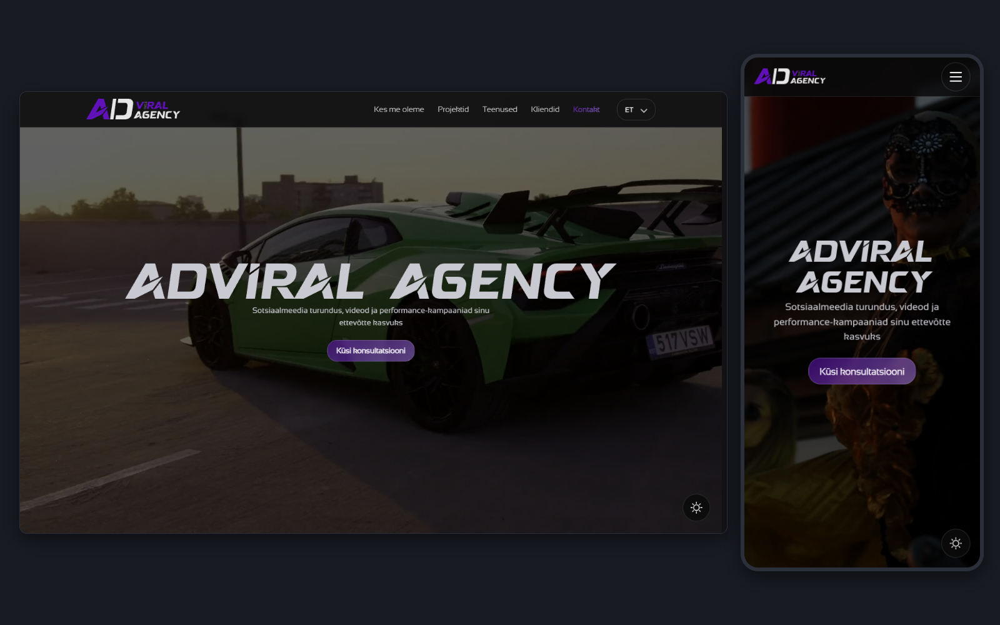

Kus ma praktikal olin
GoGPS · gogps.ee
Sõidukite ja tehnika GPS-jälgimisega tegelev ettevõte.
 gogps.ee avaleht
gogps.ee avaleht(img/gogps_home.png)
ADViral Agency · adviral.agency
Turundusagentuur: videod, reklaam, sotsiaalmeedia.

adviral.agency avaleht(img/adviral_home.png)
Minu roll: tegin kõik ise — disaini, frontendi, backendi, SEO, juurutamise ja analüütika.
 Teenuste hüpikaknad lehtedel
Teenuste hüpikaknad lehtedel Teenuse leht Google'i silmade läbi
Teenuse leht Google'i silmade läbi AI küsimus ja Analyticsi vastus
AI küsimus ja Analyticsi vastus